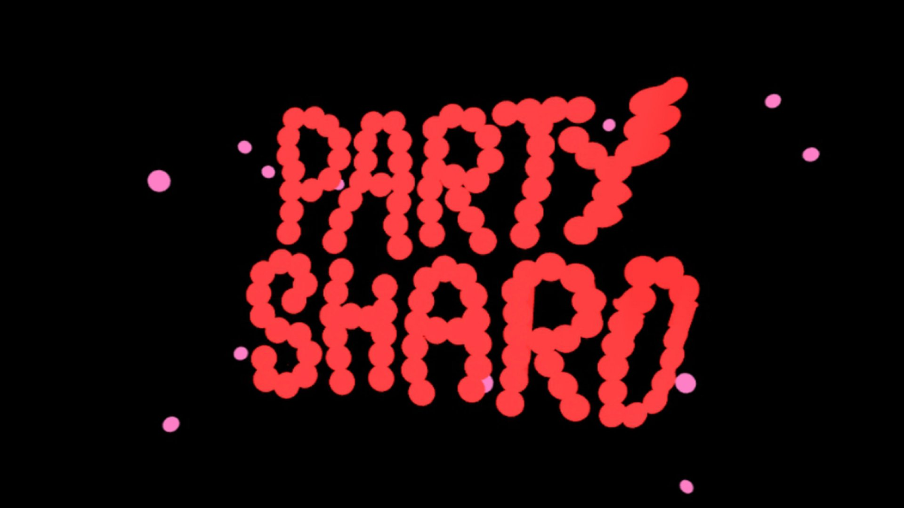
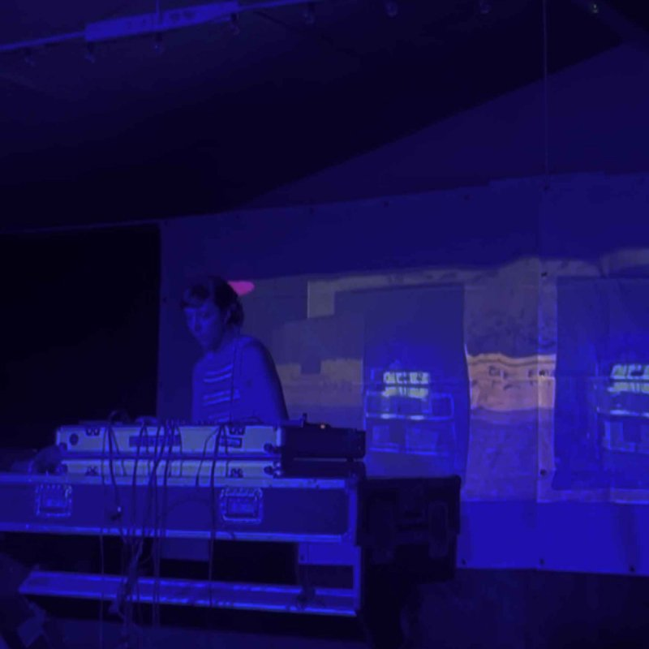
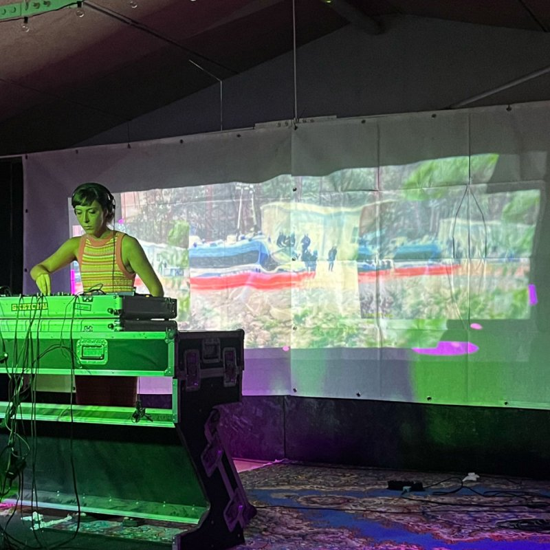
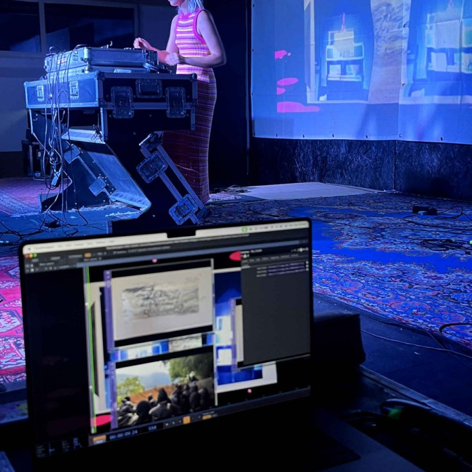
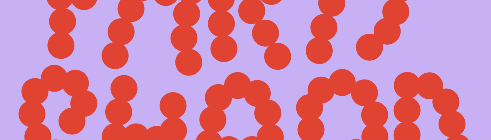
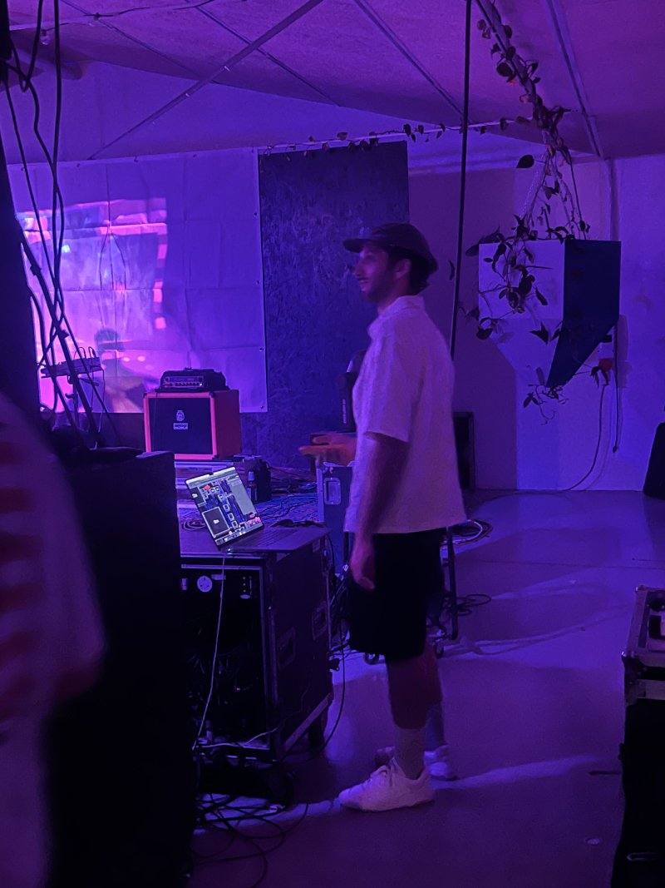
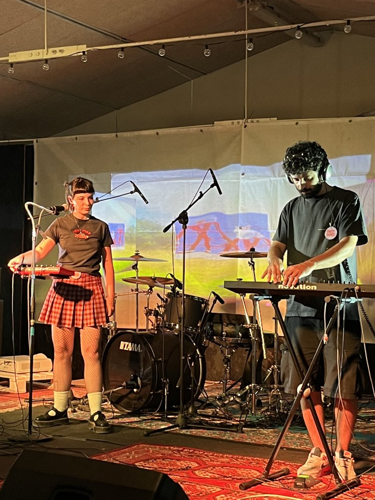

Party SHRD
Visual design e live visual per festival

Movimento, suono e immagine che si influenzano.
Party SHRD nasce per un festival multi-stage dell'etichetta Atlantide Dischi. Il compito non era accompagnare la musica con delle immagini — era costruire un sistema visivo reattivo capace di rispondere al ritmo e all'atmosfera del live in tempo reale.
Due palchi, 13 artisti con identità stilistiche diverse, due giorni per l'allestimento e le prove tecniche. Il visual diventa gesto: una performance parallela in cui il sistema pulsa, si adatta e si lega al suono.
"Una patch TouchDesigner controllata via OSC dal telefono — il palco gestito da remoto, in tempo reale, con un dito."
Tre box proiettavano immagini principali differenziate per ogni artista, in uno scenario spaziale surreale. Pattern generativi e solidi geometrici dinamici si alternavano costruendo un linguaggio visivo che cambiava pelle tredici volte senza perdere coerenza.
La complessità reale era altra: gestire due palchi simultaneamente, mandando in standby un palco con un effetto screen saver per dirigere l'attenzione del pubblico verso l'altro. Un sistema di regia visiva oltre che di generazione.






Quando il sistema è attivo il palco non ha uno sfondo — ha una pelle. I visual reagiscono al ritmo, si trasformano con l'atmosfera, cambiano registro da un artista all'altro.
Il pubblico non separa la musica dall'immagine: le vive come un'unica superficie sensoriale.
La gestione da remoto via OSC rendeva il controllo fluido e immediato — ogni variazione era una scelta in tempo reale, non una sequenza programmata. Il palco in standby con lo screen saver generativo non si spegneva mai completamente: restava vivo, in attesa, parte dello stesso sistema.


